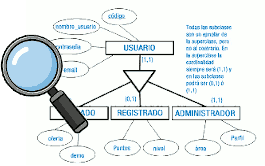

La generalización / especialización permite reflejar el hecho de que hay una entidad general, que denominamos entidad superclase, que se puede especializar en entidades subclase:
- La entidad superclase nos permite modelizar las características comunes de la entidad vista de una forma genérica.
- Las entidades subclase nos permiten modelizar las características propias de sus especializaciones.
Es necesario que se cumpla que toda ocurrencia de una entidad subclase sea también una ocurrencia de su entidad superclase.
Generalización es cuando partimos de entidades que tienen características comunes y obtenemos una entidad nueva que agrupa dichas características. Especialización es cuando partimos de una entidad general y la dividimos en otras más especializadas.
Las jerarquías se caracterizan por un concepto que hemos de tener en cuenta, la herencia. A través de la herencia los atributos de una superclase de entidad son heredados por las subclases. Si una superclase interviene en una relación, las subclases también lo harán.
En el nivel superior, en la entidad superclase, se incluirán los campos comunes a todas las entidades especializadas del nivel inferior. En cada una de las entidades subclases se encontrarán los campos específicos a esa entidad.
- Entidad Superclase : es una entidad que representa un concepto amplio o abstracto que puede dividirse en subconjuntos más específicos. Por ejemplo, "Vehículo" podría ser una entidad general.
- Entidades Subclase: son entidades más específicas que se derivan de la entidad general. Por ejemplo, "Automóvil" y "Motocicleta" podrían ser entidades especializadas de "Vehículo".
- Atributos Comunes: Las entidades especializadas heredan los atributos comunes de la entidad general. En el ejemplo, tanto "Automóvil" como "Motocicleta" podrían tener atributos comunes como "Número de chasis" y "Número de motor".
- Atributos Específicos: Las entidades especializadas pueden tener atributos específicos que no se aplican a otras entidades especializadas en la misma jerarquía. Por ejemplo, "Automóvil" podría tener un atributo específico llamado "Número de puertas", que no se aplica a "Motocicleta".
 Una generalización/especialización podrá tener las siguientes restricciones semánticas:
Una generalización/especialización podrá tener las siguientes restricciones semánticas:
- Totalidad: una generalización/especialización será total si todo ejemplar de la superclase pertenece a alguna de las subclases.
- Parcialidad: una generalización/especialización será parcial si no todos los ejemplares de la superclase pertenecen a alguna de las subclases.
- Solapamiento: una generalización/especialización presentará solapamiento si un mismo ejemplar de la superclase puede pertenecer a más de una subclase.
- Exclusividad: una generalización/especialización presentará exclusividad si un mismo ejemplar de la superclase pertenece sólo a una subclase.